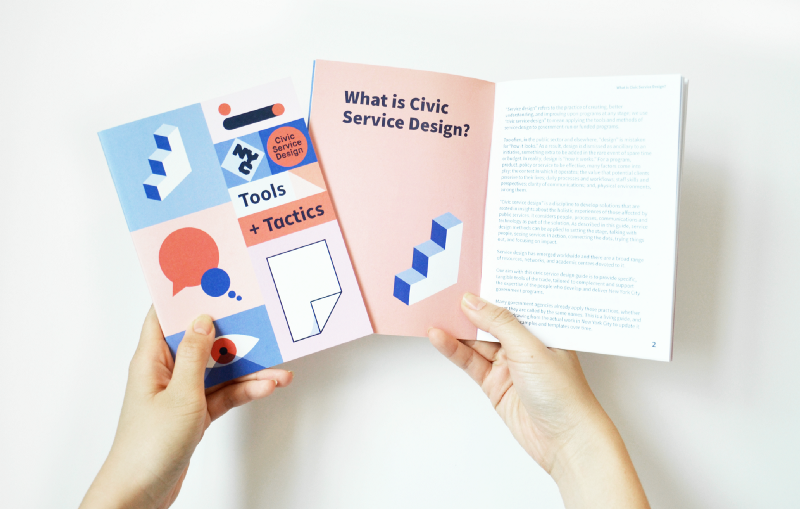
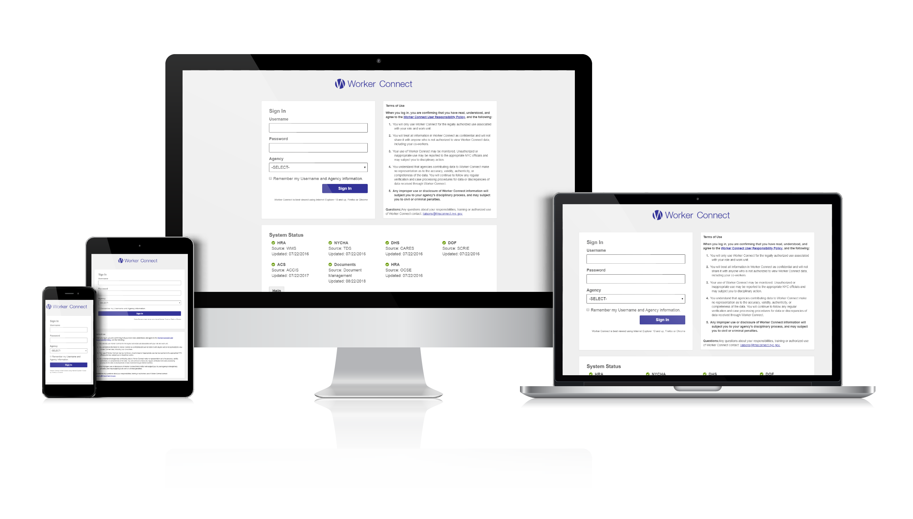
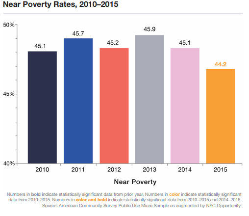

Put your data, design, digital, and policy skills to work to improve the lives of millions of New Yorkers.
The Mayor's Office for Economic Opportunity works to reduce poverty and broaden opportunity by advancing the use of data and evidence in program and policy design, service delivery, and budget decisions.
We are seeking candidates for design, data, research, policy, and technology roles to develop and support digital products and programs that reduce poverty and advance opportunity for City residents.
Our Work
The initiatives that you will work on are all aimed at helping residents address poverty-related challenges, and all of the work of our office is guided by our commitment to 3 core principles:
Equity. We believe that equal opportunity and the possibility of upward mobility must be genuine - that where you start out in life should not dictate where you end up. But too often poverty and social conditions create barriers for New Yorkers that limit their ability to advance and participate fully in the city's economic and civic life. We work to create a more equitable city, where all residents can take advantage of resources, support and opportunities they need to fulfill their full potential.
Evidence. We believe that the public sector should make decisions based on rigorous attention to data - drawn from research and evaluation, performance measurement, and the voices of those who experience public services as well as the challenges they are meant to address. Policies and programs exist which can effectively reduce poverty and broaden opportunity; government should invest in those that work, and end those that do not. We support and promote evidence-based policy making in New York City and beyond.
Innovation. We believe that more solutions are required to address unmet needs and stubborn problems - and are optimistic that new approaches delivered through government can achieve large-scale impact. Innovation is fundamentally about getting better results, and demands a commitment to assess outcomes rigorously, capture and respond to lessons, and accept the risk that some efforts will fail. We serve as a proving ground to influence how government addresses poverty and its related challenges.
Digital and Data Products

Much of our digital work focuses on making it easier for New Yorkers to access services. We seek to make information and enrollment in services available to New Yorkers easy to find and use on any device. Our key digital tool for access to services is ACCESS NYC, a website that allows New Yorkers to screen for eligibility for over 30 city, state, and federal benefit programs in 11 languages. Depending on the benefit, residents can apply online, print out pre-populated application forms, and determine agency locations where they can go to directly apply for services. ACCESS NYC received an award for “Best Application Serving The Public” from the New York Digital Government Summit.

Our office also oversees Growing Up NYC and Generation NYC. Growing Up NYC brings the City’s family and children-related resources together in a mobile-first, accessible platform to make it easier for parents to raise strong and healthy kids. It features easy-to-read age guides with developmental milestones and parenting tips, over fifty City, State, and Federally-funded benefits and programs, and local events and activities.
Generation NYC is our youth site, featuring topics (such as school, work, finance, and counseling), inspirational youth profiles, and free trips around NYC.
All three products are supported by the Benefits and Programs API, a dataset that provides benefit, program, and resource information for over 40 health and human services available to NYC residents. The data is kept up-to-date, including the most recent applications, eligibility requirements, and application dates.
Service Design
Our Service Design work develops solutions rooted in insights about the holistic experiences of those affected by public services. It considers people, processes, communications, and technology as part of the solution. By applying Service Design methodologies, our team better meets the needs of residents and service providers with approaches that produce better results.
Data Integration
Our data integration work helps City agencies deliver more effective, holistic services to the right people at the right time, targeting support to those who can most benefit.
One of our key tools for data integration is Worker Connect, a data sharing technology that allows caseworkers to see real-time information about clients drawn from multiple City sources, helping the City better coordinate the delivery of resources and support to individuals and families. Caseworkers can search for clients and retrieve demographic information, household data, service interactions and casefile documents. Users of Worker Connect only access information that they have been authorized to view based on their role and all applicable laws and regulations.
Research
Research of various forms is inherent in all of NYC Opportunity's work. Understanding client perspectives, programmatic best practices and demographic conditions are all central to initiatives, digital products, and policies that are evidence driven and responsive to the needs of low-income New Yorkers.
Our Poverty Research team produces the annual official poverty measure of the New York City government, the NYCgov Measure, that provides a more nuanced understanding of poverty in New York City than the federal rate allows. Our poverty research also informs the City's understanding of inequality and the effectiveness of policies in addressing disparities among local residents and communities.
Programs & Evaluation
NYC Opportunity helps agencies and partners design programs and implement them using all of the tools at our disposal from research to data integration. We engage in program management and performance monitoring for the programs within our portfolio, and help partners develop appropriate performance monitoring metrics for their programs and initiatives. Additionally, NYC Opportunity works with independent evaluation firms to assess the effectiveness of programs within our portfolio and select citywide initiatives. These evaluations inform New York City’s program and budget decision-making, and contribute to public policy in the social services more generally.
Our Teams
Data
The Enterprise Data Solutions (EDS) team members help access, integrate and analyze data to develop more effective services and inform policy decisions and programmatic designs. The team views data as a protected asset that can be responsibly leveraged across digital products to support analytical initiatives, facilitate knowledge sharing, and develop business strategy.
- Current Openings:
- Java Developer, Integration Services
- MDM Senior Developer
- Testing Lead
- Fellowships and Apprenticeships:
- Data Analytics Fellow
- Data Governance Fellow
- Technology Development Fellow
- Fellowships and Apprenticeships:
- Graphic Design Apprentice
- Graphic Design Fellow
- Fellowships and Apprenticeships:
- Product Management Fellow and Apprentice
- Current Openings:
- Advisor (Connections to Care)
- Senior Advisor (Connections to Care)
- Current Openings:
- Java Developer
- Software Engineer
- Fellowships and Apprenticeships:
- Engineering Fellow
The Service Design Studio
The Service Design Studio helps further the City’s use of human-centered design methods. The Studio team is versed in design tools, experienced in developing in-person and digital services, and focused on addressing poverty-related challenges. The Studio partners with agencies to engage with residents and those who deliver services so that their insights can shape new and existing programs. The Studio team conducts research, develops documentation, offers service enhancements, creates user experiences, and works closely with internal and external teams to prototype, develop, and set ongoing strategy for services.
The Studio is building capacity for design across NYC government through office hours, workshops and producing Civic Service Design Tools + Tactics—an introduction to service design for public servants.
Within NYC Opportunity, the Service Design Studio works closely with the Product team on our core digital products ACCESS NYC, Growing Up NYC, and Generation NYC to offer design services and enhancements. Additionally, the Service Design Studio collaborates with the Program & Evaluation team on program design and evaluation.
Product
The Product team conducts user research, creates user experience, and works closely with the internal and vendor technology teams to prototype, develop, and maintain evolving digital tools. The team also leads outreach, training and customer service for the products in its portfolio. The public-facing products include ACCESS NYC, Growing Up NYC, and Generation NYC and their related APIs.
The Product team works closely integrated with other NYC Opportunity teams, including the development, design, and data teams. It also engages with other program and technology staff across City government. The team helps NYC Opportunity and our agency partners translate anti-poverty program and policy goals into digital strategies. The team also helps define how the City of New York uses modern, agile and user-centric approach to technology products, including offering product management best practices. Working as part of the team is an opportunity to continue to build a model for in-house product development and serve as national leader in digital government innovation.
Programs and Evaluation
The Programs and Evaluation team works with City agency partners to support the design, implementation, monitoring and evaluation of new initiatives for low-income New Yorkers. The team currently manages a portfolio of initiatives of its own investments, as well as managing programs that are part of the Young Men’s Initiative. They engage in robust program management and performance monitoring for the programs within the NYC Opportunity portfolio, and help partners develop appropriate performance monitoring metrics for their programs and initiatives. For each initiative, a distinct evaluation strategy is developed. Evidence is used to inform program funding decisions and to improve service delivery. The team also supports the evaluation of key Mayoral and agency priority initiatives, currently managing over 25 evaluations.
Technology
The Technology team members develop new applications and maintains citywide, enterprise products. The team leverages existing City technology assets and systems, and also works in an agile, iterative way to build new digital services, collaborating closely with the Design and Data teams.
Poverty Research Unit
The Poverty Research Unit applies data analytics to build an accurate description of who is in poverty, identify some of the leading causes for being in poverty, and measuring how citywide programs work to offset the poverty rate. This data allows NYC Opportunity to better target anti-poverty initiatives and design more effect metrics in measuring success.